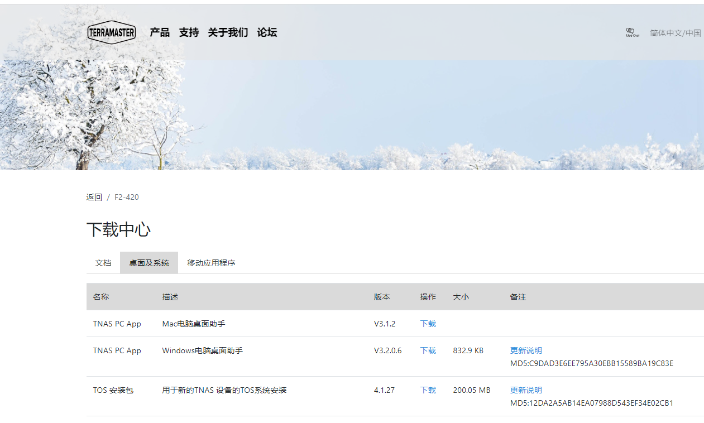
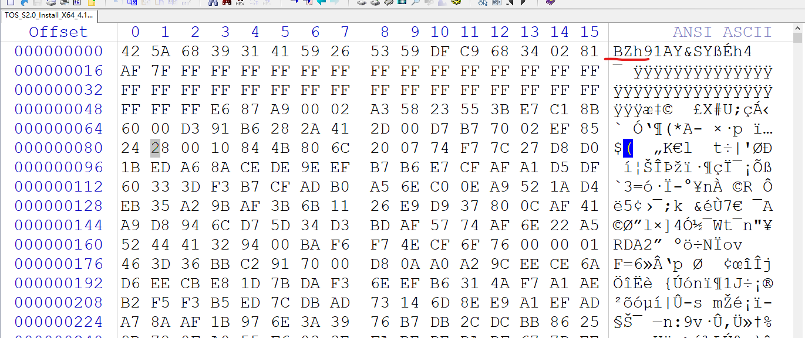
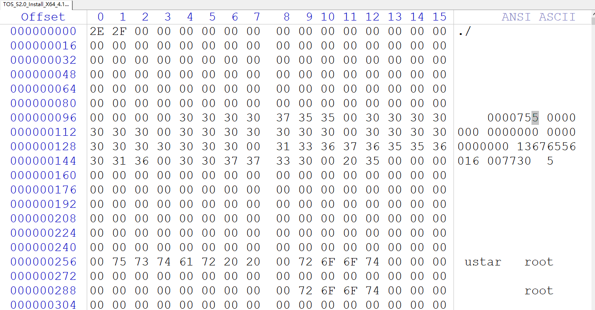
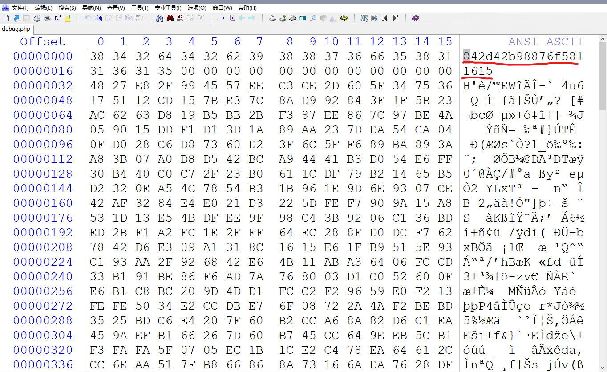
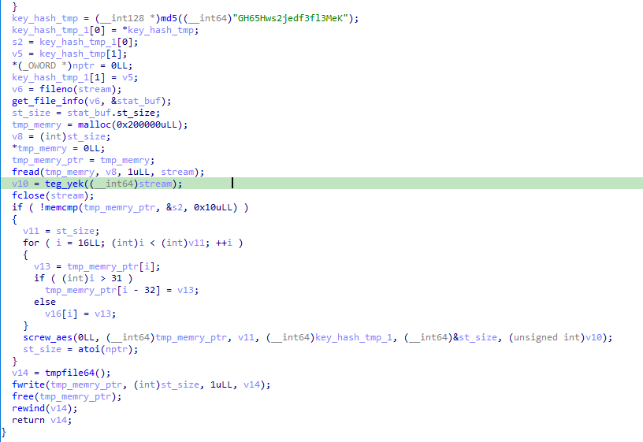
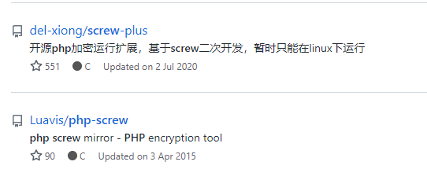
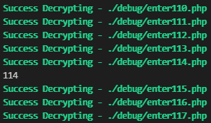
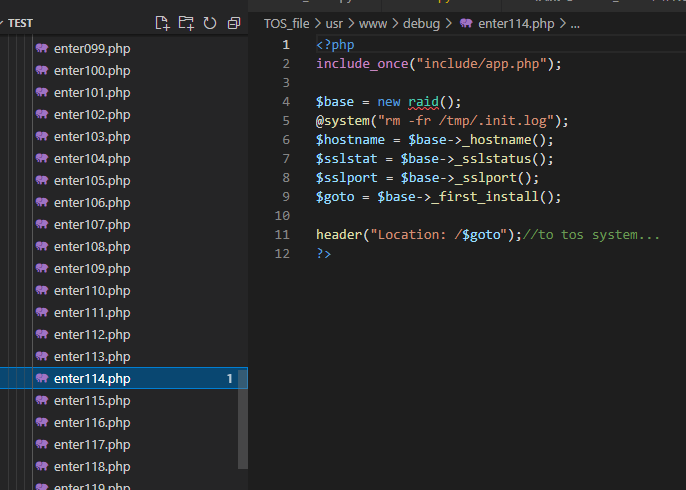

铁威马F2-420_4.1.27固件逆向分析
准备
- IDA7.x 64位
- 铁威马F2-420_4.1.27系统固件
在官网上下载对应的系统固件(TOS_S2.0_Install_X64_4.1.27_2006301044_2006301431.ins)：

解包
这里先看一下 ins 后缀名的固件包的结构，分析如何解包获取源文件。winhex 打开发现是个 bz 压缩包。bandzip 可以直接解压缩：

如果用 WinRAR 虽然也能解压缩但是会是这个样子：

这里一开始是用了 WinRAR 解压缩，于是无奈分析了一下解压缩之后的这个文件的格式发现可以理解为一个简易但不规范的文件系统。
上图中最开始的 ./ 即文件（夹）对应的路径；后面的 0000755 即对应文件（夹）的权限设置，后面的连续数字参数未发现含义，既不是数据偏移也不是时间戳，可以略过；最后一个单个数字参数，即上图中的 5 ，指代类型，5 指代文件夹、0 或者 2 都指代文件。
其中连续数据区域（单个数据块）大小为 200bytes。并未发现文件大小对应的参数，简单下个脚本手工提取一下：
1 | import os |
分析
拿到系统固件中的全部源文件之后开始分析。先简单搜索一下关键字定位关键代码文件的位置：/usr/www。
简单查看几个php文件发现除了极个别不是很重要的文件之外全部加密了。而且具备规律：
加密的php文件前十六进制都一样疑似hash值或某种key，跟着往后十六字节是记录的文件加密前的大小（可以看到该数字与文件剩余数据的大小的差值小于16且文件数据大小一定为16的整数倍，符合aes、des等常用对称密码特征）。

这里猜测应该是魔改了 php 二进制程序，在服务启动时应该会解密这些php文件进行运行。找到php文件进行逆向分析，尝试定位解密代码。php 程序位置：/usr/sbin/php。
在ida中跟进代码逻辑未能发现可疑函数与可疑字符串，但在对特征值的搜索中，检索到一片文章：TerraMaster NAS Vulnerabilities Discovered and Exploited
该文章对同型号的历史版本固件进行了分析并发现了可利用漏洞。其中就有涉及 php加密文件 解密的内容。在该文章中得知开发者在历史版本中曾写死了 aes 的加密密钥，其中直接将对应的明文字符串 GH65Hws2jedf3fl3MeK 写进了程序，这里可以直接在 winRAR 解压出来的简易文件系统中暴力匹配该字符串，定位到该字符串位于php的依赖文件：/usr/lib/php/modules/php_terra_master.so 中。这里其实在一开始对 php 二进制程序本身逆向无果时可以尝试寻找其对应的依赖文件进行搜索找到，文件名字特征过于明显。
ida分析该文件定位到相关的解密函数：

这里起初以为 screw_aes 是魔改的 aes 算法，后跟进分析发现开发者并未对其进行本质改动。主要是在原 screw_aes 的基础上在aes加密出口和解密入口添加了一个异或。异或值与上图中函数 teg_yek 的返回值有关。我们跟进分析：
1 | char __fastcall teg_yek(FILE *a1) |
这里通过 php_sprintf 将目标php文件的文件链接路径写入v4，然后通过该链接直接读取文件内容放入到 buf中，如果函数执行成功，返回 v4[v1+251]，即 v5[v1-5]。即：取读取到的倒数第五个字节的数据去和加密数据进行异或，然后进行 screw_aes 的解密操作。
这里在直接写 aes 解密时未能成功。前文提到第一遍分析的时候以为是开发者魔改了aes算法也是因为这里未能解密，后续查阅资料找到一个开源工具：

翻阅该开源工具确认开发者是基于该工具做的二次开发。我们下载源码编译一个未做改动的可执行程序用ida加载，与该固件的 php_terra_master.so 中的代码进行对比。可以确认开发者确实只添加了一个异或处理。这里猜测此处应该是历史版本遗留，因为在最初的 php 二进制文件逆向中并未找到其调用 screw 相关的函数，其中也没有写入明文字符串 GH65Hws2jedf3fl3MeK，所以猜测开发者应该修改了这里的异或逻辑。但考虑到我们拿到的加密php文件规律与历史版本吻合，所以猜测开发者只是增加了 php 二进制文件中解密代码的逆向难度与异或字节的取值方式，尝试遍历单字节异或的所有可能逐一进行解密操作，得到源代码。
爆破脚本，twmnas.exe 使用开源工具中的解密部分代码编译：
1 | import os |
结果：


在另外的php文件上尝试也解密成功。至此，解密完成。